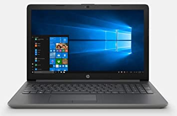

Se trata de una máquina indispensable en la mayoría de las empresas y de los lugares de trabajo, ya que cuentan con programas de oficina que permiten escribir textos y realizar cálculos, entre otras acciones. Con una PC también se puede acceder a Internet (y, por lo tanto, utilizar el correo electrónico, buscar información, etc.), ver películas, escuchar música y jugar, entre muchas otras posibilidades.
Esto hace que se trate de dispositivos importantes para la educación y para el ocio. A una PC se le pueden conectar múltiples periféricos. Algunos resultan indispensables, como el monitor, el teclado y el mouse (ratón). Otros, en cambio, son optativos, como una impresora, un escáner o una webcam.


tambien encontramos en el mercado actual los equipos portatiles los cuales ya vienen integrados con los perifericos requeridos para poder trabajar en nuestros equipos, son perfectos para llevarlos cada vez que salgamos y no tener que cargar con todo el equipo al hombro, considerados uno de los mejores avances a la tecnologia
La oferta actual de piezas y equipos de PC supera a la de componentes para escritorio en muchas características; me refiero a que la torre con luces LED de 16 millones de colores, gigante, ruidosa y estorbosa está disponible en una variante más pequeña para servir como un centro multimedia dentro del hogar, y ahora los fabricantes de PC están poniendo más atención a las tarjetas madre Mini ITX. De esta forma, actualmente hay equipos pequeños con grandes capacidades y características, que pueden funcionar como un centro multimedia dentro del hogar. Además, no es necesario que sea monstruos gracias a soluciones como In-Home Streaming de Steam
Trabajo Presentado por: Anderson Steven Mosquera Ariza